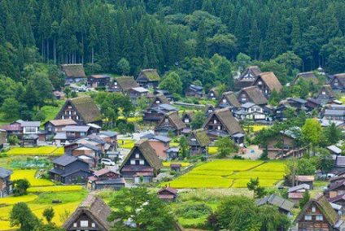
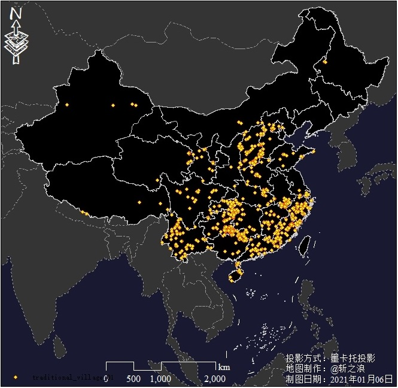
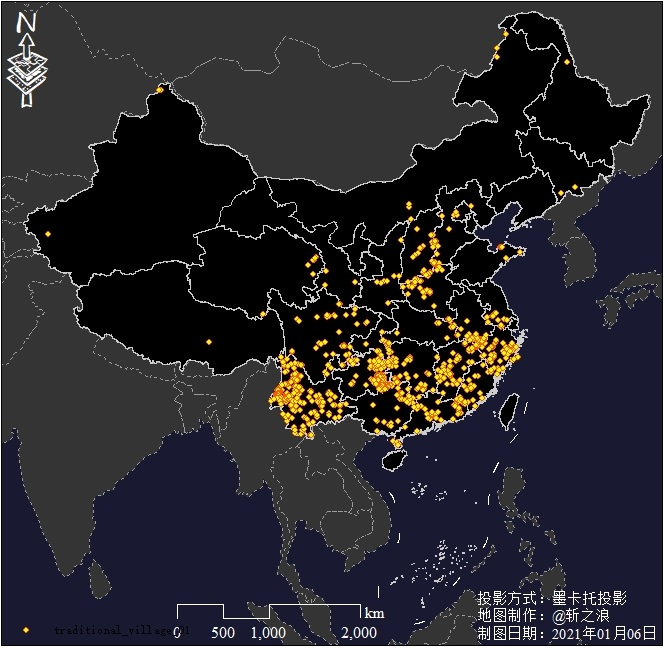
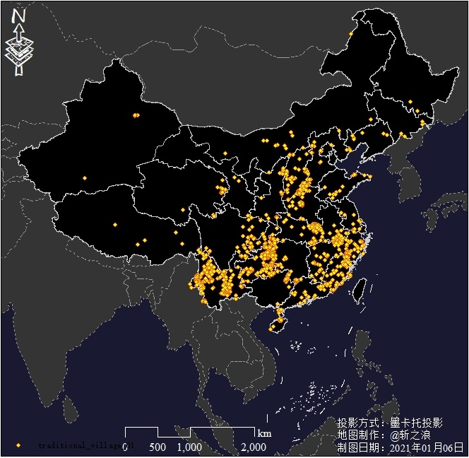
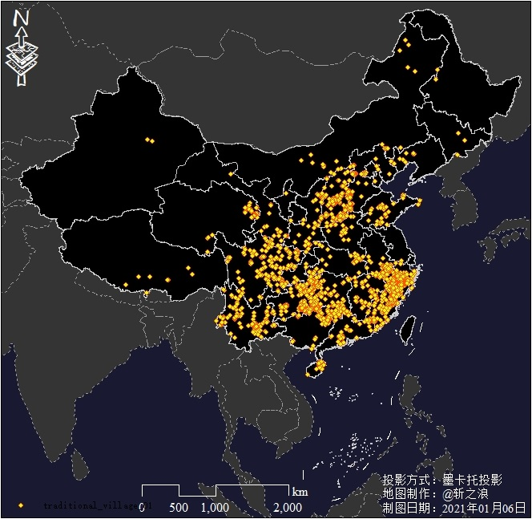
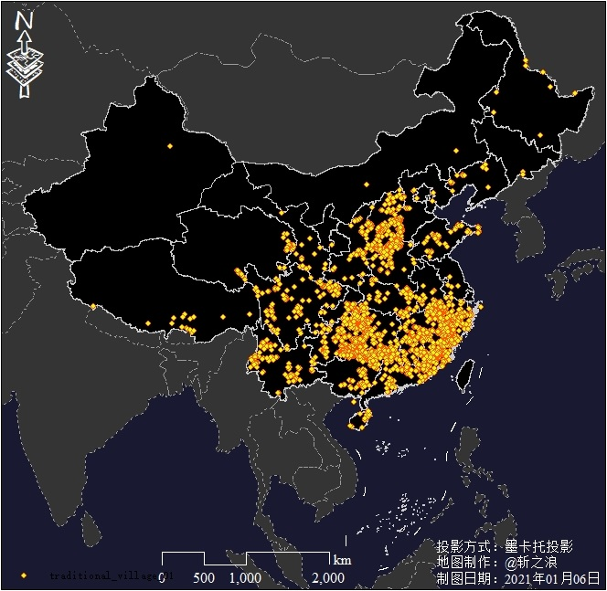
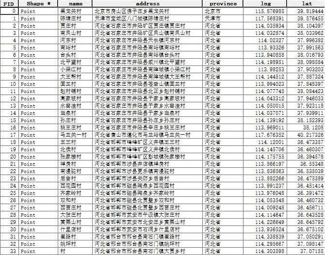

全国传统村落空间分布数据（更新至第五批）
Traditional village of China
传统村落是那些历史悠久、遗存雄厚、文化典型的村落。在漫长的历史变迁与现代化冲击下，这类村落正处于急速消失的过程中，但它们是中华民族决不能丢失、失不再来的根性的遗产，是蕴藏着我们民族基因与凝聚力的"最后的家园"，是五千年文明活态的人文硕果。
数据介绍
习近平在中央城镇化工作会议上的讲话中提到，要"让城市融入大自然，让居民望得见山、看得见水、记得住乡愁"。传统村落保护同样是城镇化进程中的一个重要组成部分，在积极稳妥地推进城镇化的同时，保护好山水田园，尤其是那些有传承价值、历史记忆、地域特色、民族特点的美丽乡村，十分必要。

当今国际上对历史文化遗产分为两部分。一是物质文化遗产，一是非物质文化遗产。
——冯骥才
古代社会的发展、经济除官方记载,绝大多数蕴藏在村落里。古村落是民间历史的载体。
——林济
作为一个拥有悠久文明史的国家，我国国土上遍布着众多风情各具、历史悠久的古村落。
——仇保兴

如果说80年代我是跟无知做斗争，那现在就是跟贪婪做斗争，比过去深刻得多，也难得多。
——阮仪三
如果说80年代我是跟无知做斗争，那现在就是跟贪婪做斗争，比过去深刻得多，也难得多。
——阮仪三
2012年12月17日，住房城乡建设部等部门组织开展了全国第一次传统村落摸底调查，在各地初步评价推荐的基础上，经传统村落保护和发展专家委员会评审认定并公示，住房城乡建设部、文化部、财政部等部门共同决定具有重要保护价值的村落列入中国传统村落名录。
本站提供的数据是在中国传统村落名录的基础上，通过地理编码，制作成具有空间坐标信息的矢量数据。中国传统村落名录参考中国传统村落网
数据概况
空间范围：全国
时间范围：2012年至今
空间分辨率：--
数据类型：矢量|ESRI Shapefile Point
投影坐标：WGS 84
数据预览
|  |  |  |
| 第一批 | 第二批 | 第三批 |
|  |  |  |
| 第四批 | 第五批 | 属性表 |
数据下载
全国传统村落空间分布矢量数据
建议使用Google浏览器，IE内核浏览器可能不正常显示下载按钮等！
Fighting, GISer!
最新博文